Aid to the Body
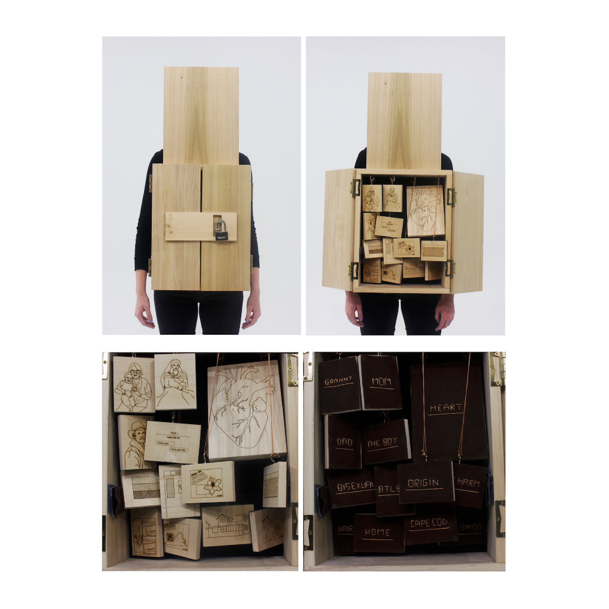wood, felt
Materie
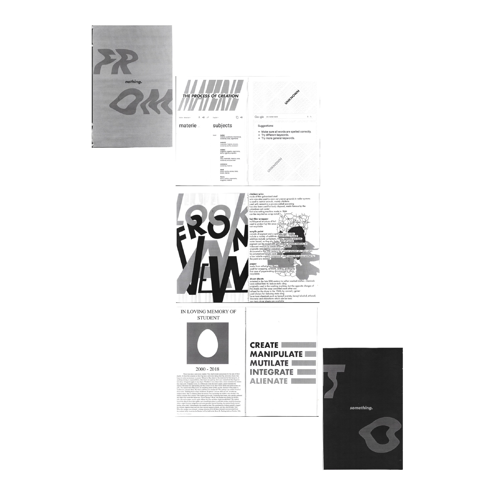
a zine examining the art form "materie"
How Badly Does This Make Me Want to Wash My Hands?

a zine examining the cleanliness of found objects
Betsy
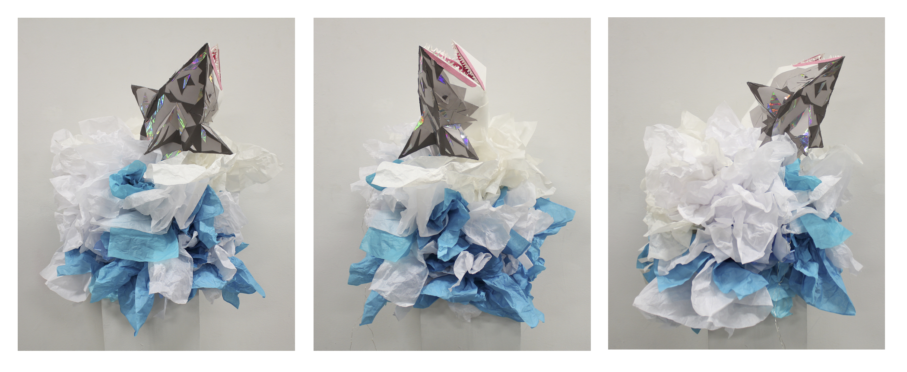construction paper, hot glue, holographic paper
Still Life
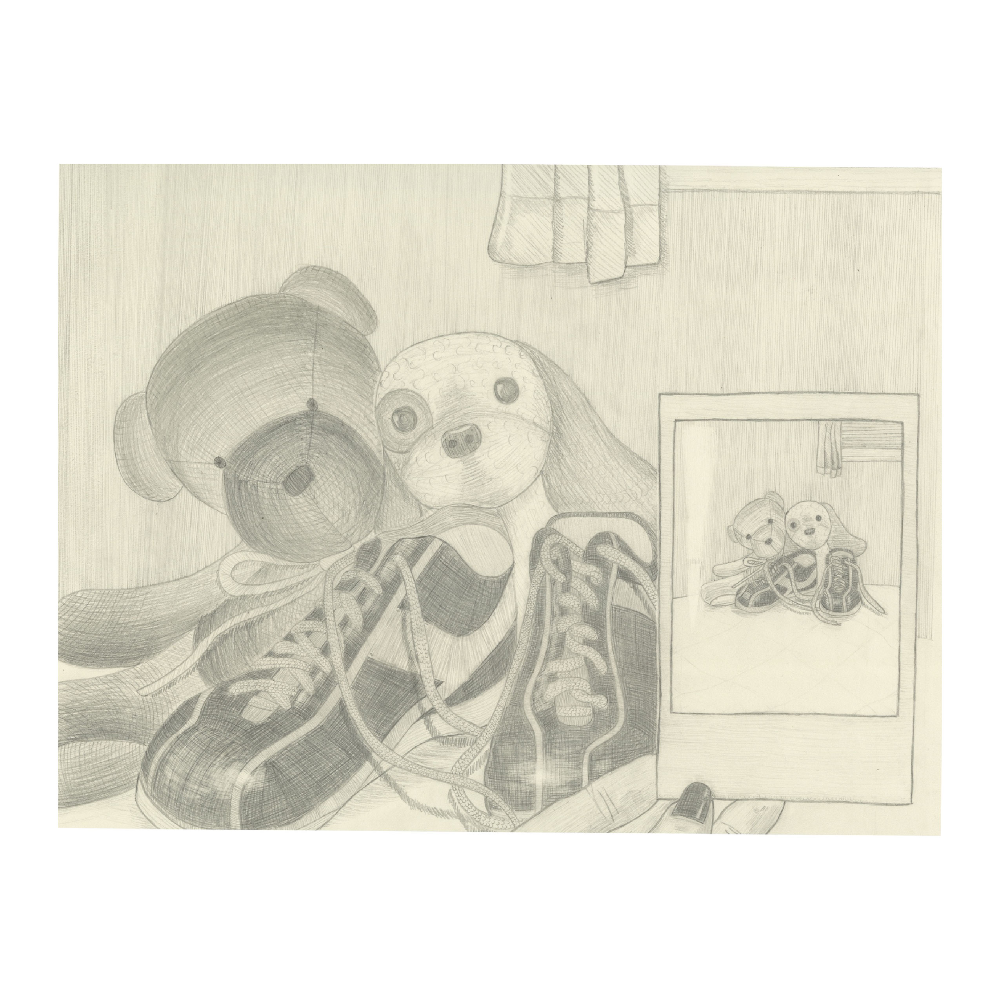paper, pencil
Zappa

paper, pencil, micron pen
Gemini
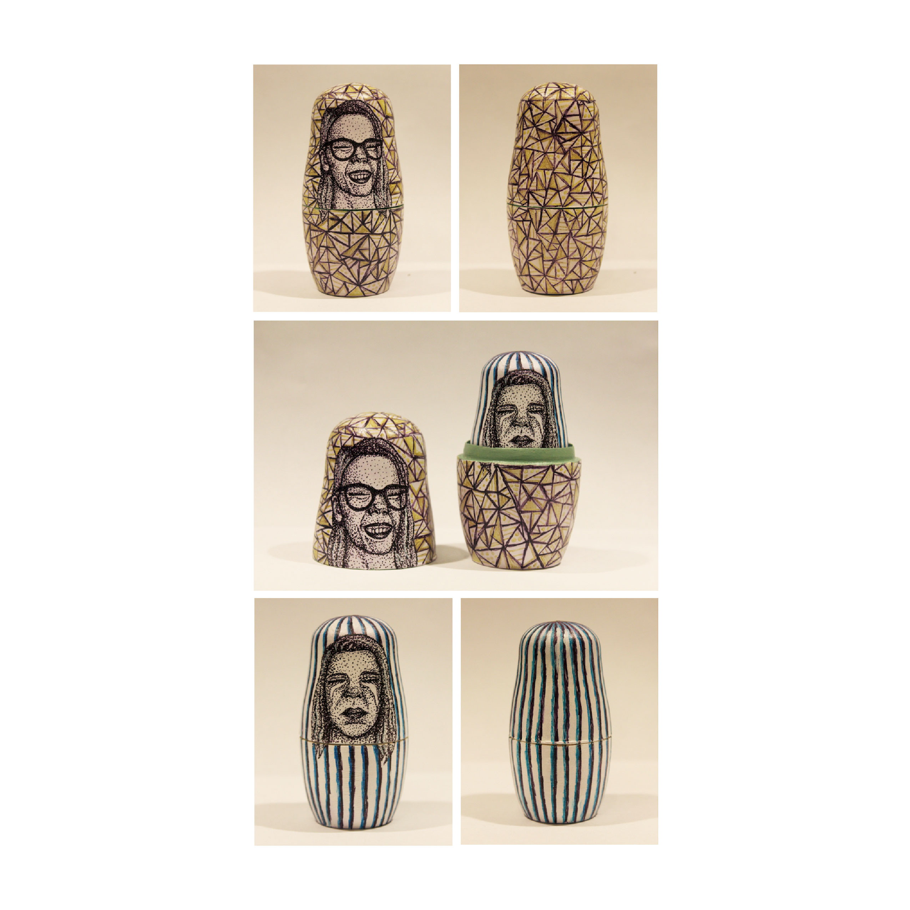russian nesting dolls, acrylic paint, fine tip sharpie
Color Study
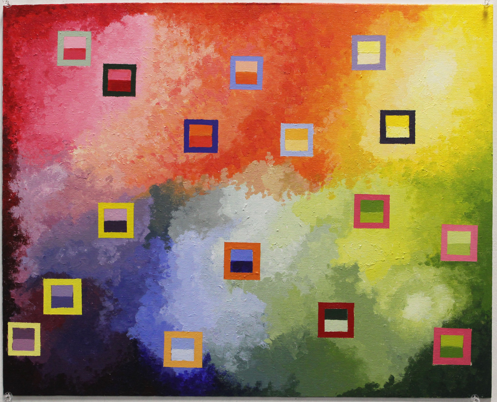acrylic paint, canvas
What Can Go Wrong?
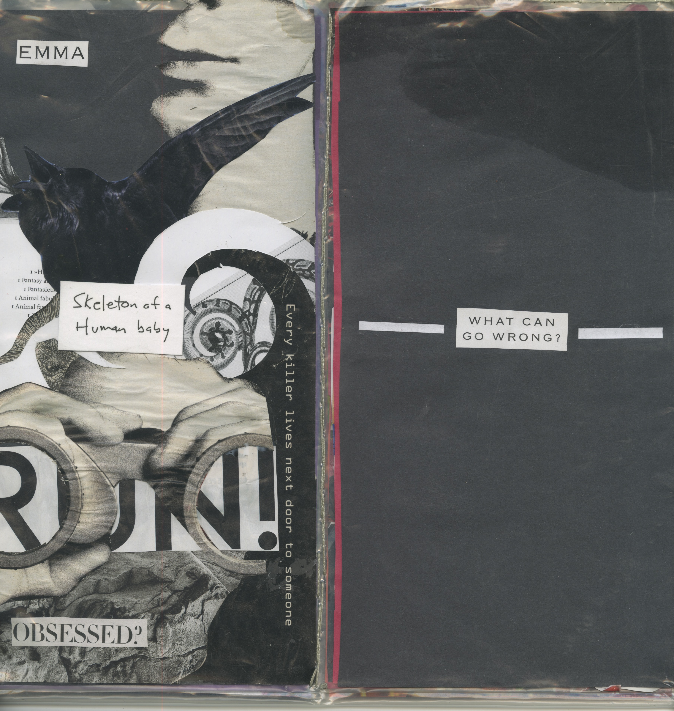
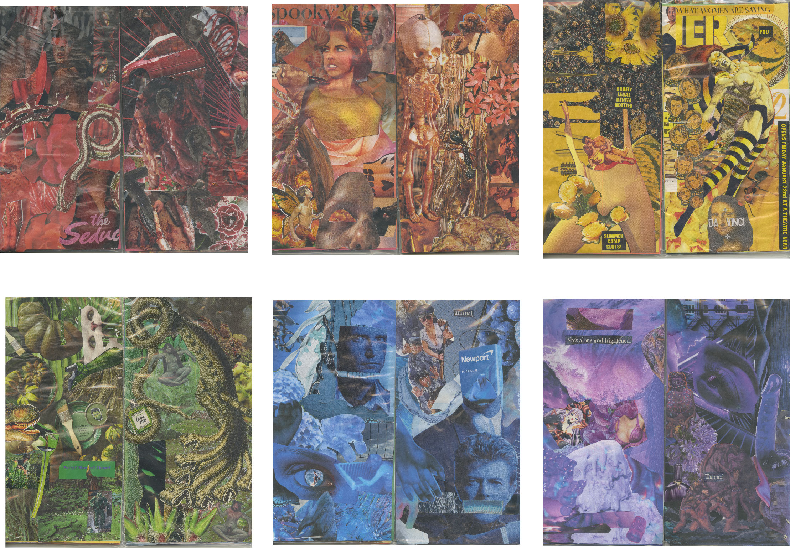
vinyl record sleeves, embroidery floss, clippings
Home
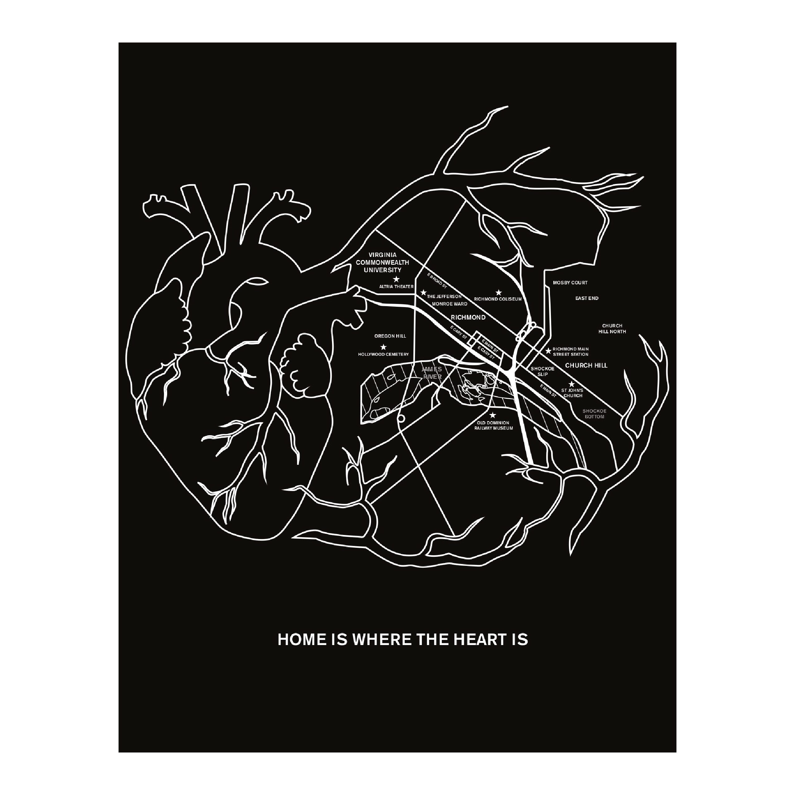11x17
Stephen King's: The Shining
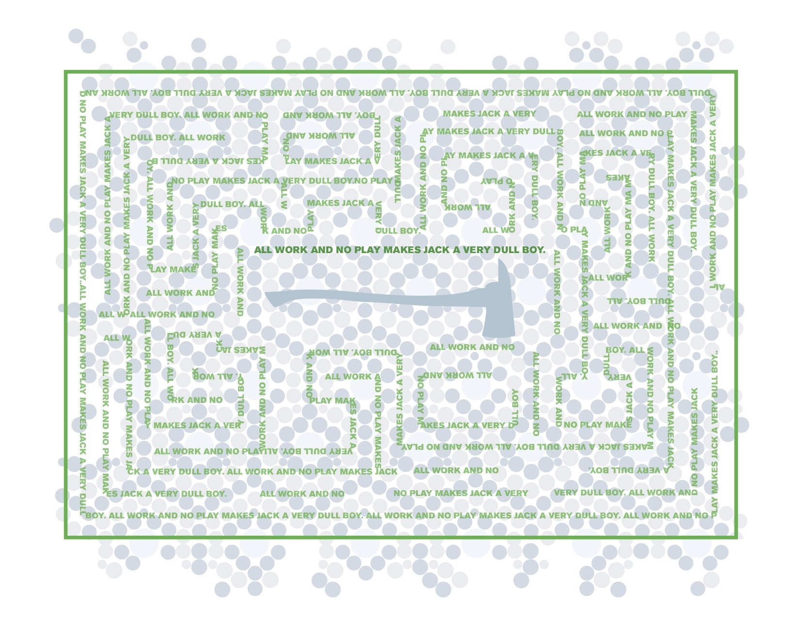11x17
Underneath
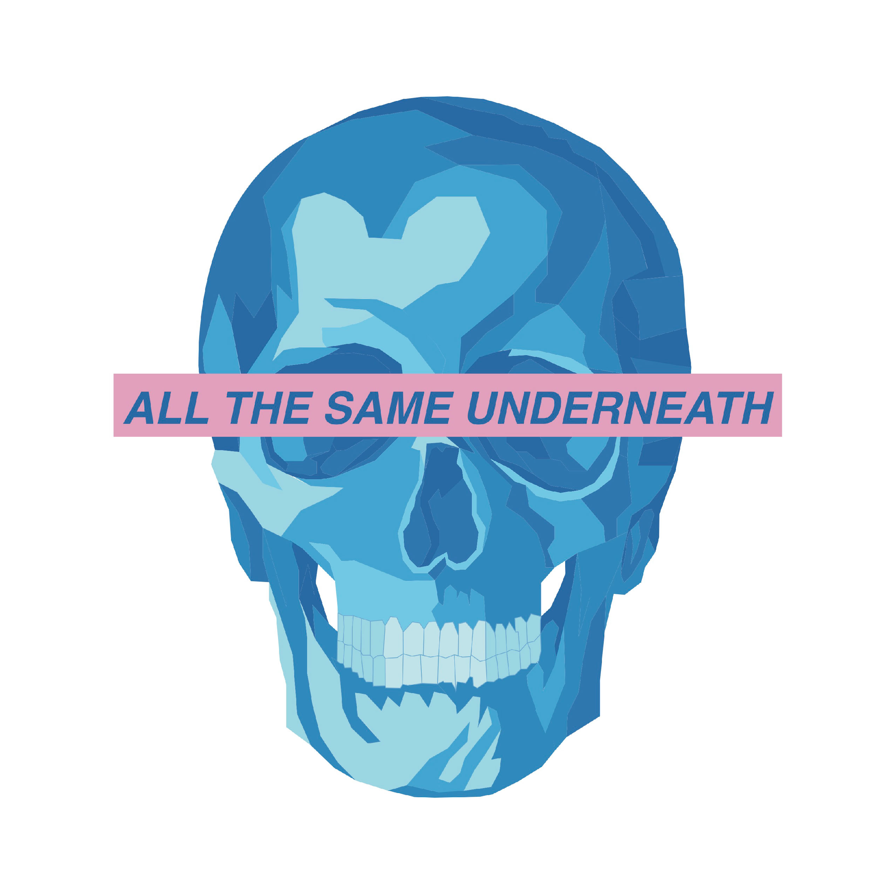25x35